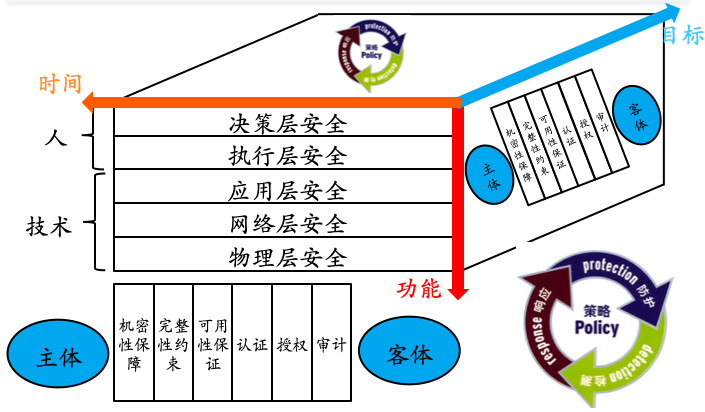
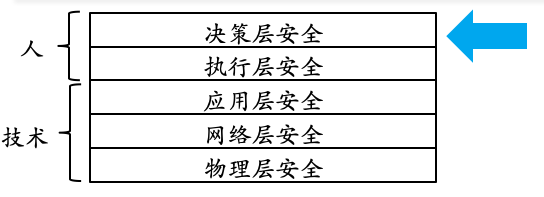
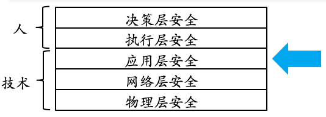
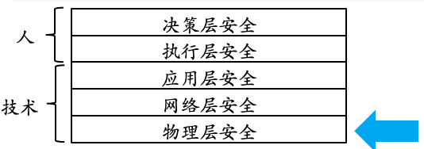
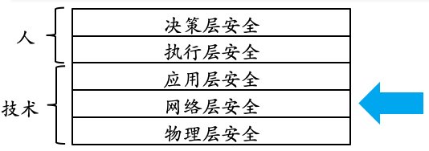
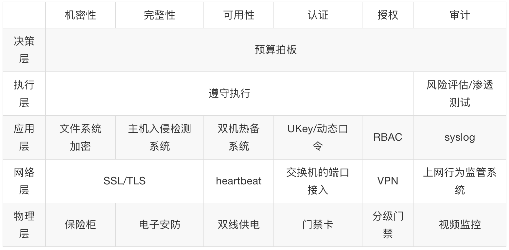
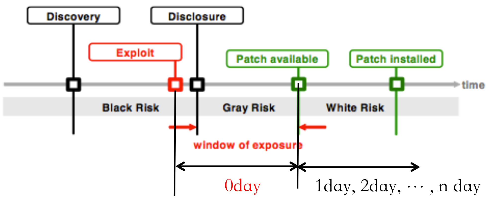
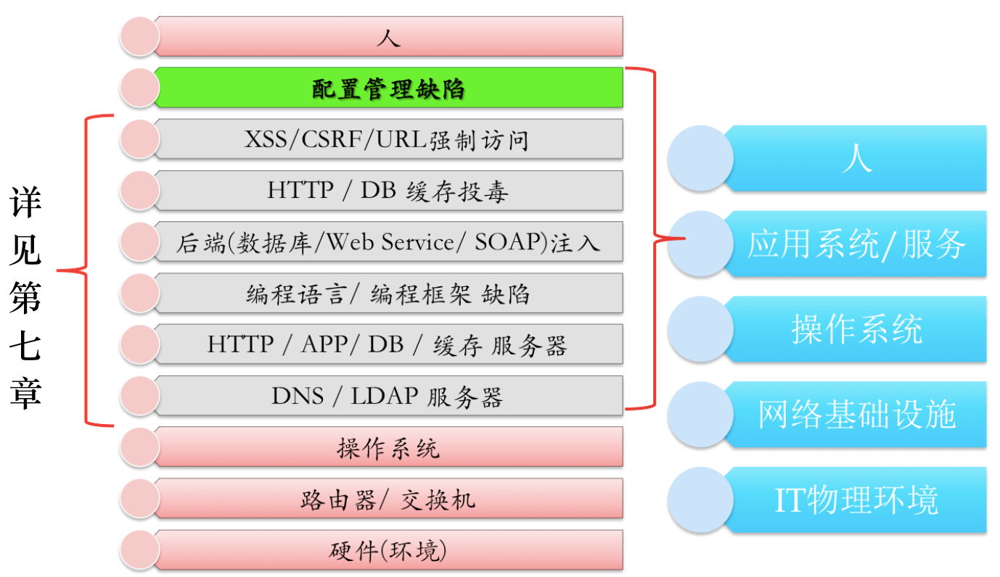
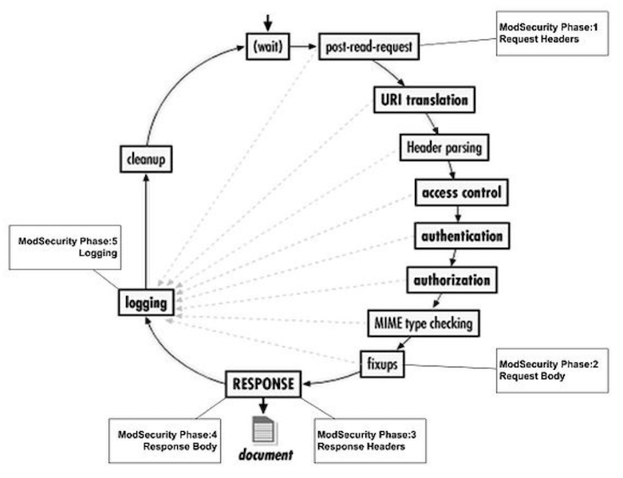

网络安全
黄玮
第十章 应用程序安全加固
温故
- 防火墙
- 防外不防内
- 入侵检测
- 防火墙的有力补充
知新
- 防火墙和入侵检测并不能解决所有的安全加固需求
- 应用程序的安全加固是一个系统工程
- 信息安全是一个持续对抗过程
信息安全技术三维技术体系

3 种视角，3 条加固路线
功能维度看安全加固

- 了解安全原则/常识/意义
- 最小化授权
- 有条件安全（ 没有绝对安全 ）
- 木桶原理
- 等级安全

- 安全管理规范/安全法律/法规
- 理解和掌握
- 遵照执行

- 漏洞挖掘、分析与利用
- 侧重于实现
- 数据/内容安全
- 运维安全

- 漏洞挖掘、分析与利用
- 侧重于协议

- IT 基础设施环境安全
- 电力供应
- 物理环境
- 温度、湿度、电磁辐射等
目标维度看安全加固
举例说明

- 机密性：认证凭据的加密存储和传输，防⽌嗅探和复制仿冒
- 完整性：主体/客体/消息/信号的存储和传输不被篡改
- 可用性：主体随时可以访问客体
- 认证：验明主体真实身份
- 授权：验证主体有访问客体的权限
- 审计：防⽌主体抵赖对客体的历史访问
时间维度看安全加固
- 安全是
- 持续循环过程
- 动态变化
- 策略 (Policy)
- 防护 (Protection)
- 检测 (Detection)
- 响应 (Response)
认识一下零日漏洞（0day）

重要里程碑点
- 漏洞发现（
Discovery） - 漏洞利用（
Exploit） - 漏洞曝光/披露（
Disclosure） - 补丁可用（
Patch avaliable） - 已安装补丁（
Patch installed）
漏洞应急响应时间窗口
- 黑色风险：未知漏洞存在性，一旦被攻击几乎无法察觉。
- 灰色风险：已知漏洞存在性，但没有获得正式安全补丁。可能有临时修复或缓解措施公布，但依然面临不确定性风险。
- 白色风险：已有正式安全补丁。但如果不打补丁，则依然还是会中招。
- 一个新漏洞在被检测到利用行为之后到厂商正式发布补丁之前的这一段时间就被定义为零日漏洞（0day）
- 在没有被曝光之前，零日漏洞是「黑色风险」
- 一旦被曝光，零日漏洞就成为了「灰色风险」
- 攻防双方都在抢
0day的首发（发现） - 对信息系统管理员和运维人员来说：保持自动更新是持续对抗的可行且必然的选择
安全加固的基本原则
- 需求驱动
- 木桶原理
需求驱动
- 参考等级保护的意义
- 明确安全需求
- 安全防护是需要成本投入的
- 安全建设和管理需要兼顾系统性、针对性、可行性
- 明确重点、突出重点、保护重点
木桶原理
- 安全防御中的任何一个短板都会导致整个安全防御体系的崩溃
本章《应用程序安全加固》将要介绍和分析的方法重点集中在前述安全加固二维矩阵的应用层，更具体来说包括了操作系统安全加固和运行于操作系统之上的应用程序和信息系统本身的安全加固。
围绕「机密性」目标的需求场景分析
「机密性」需求场景举例
- 认证凭据信息的存储
/etc/passwd和/etc/shadow
- 配置文件中的口令信息
- 利用
crypt(3)API 接口加密敏感信息- apache 的
htpasswd/ proftpd 的ftpasswd
- apache 的
- 利用
- 明文存储
- 大量 Web 应用的配置文件
- 加密通信
# 查看常见口令安全散列函数的存储格式
man 5 crypt
# yescrypt
# \$y\$[./A-Za-z0-9]+\$[./A-Za-z0-9]{,86}\$[./A-Za-z0-9]{43}
# gost-yescrypt
# \$gy\$[./A-Za-z0-9]+\$[./A-Za-z0-9]{,86}\$[./A-Za-z0-9]{43}
# scrypt
# \$7\$[./A-Za-z0-9]{11,97}\$[./A-Za-z0-9]{43}
# bcrypt
# \$2[abxy]\$[0-9]{2}\$[./A-Za-z0-9]{53}
# sha512crypt
# \$6\$(rounds=[1-9][0-9]+\$)?[./0-9A-Za-z]{1,16}\$[./0-9A-Za-z]{86}
# sha256crypt
# \$5\$(rounds=[1-9][0-9]+\$)?[./0-9A-Za-z]{1,16}\$[./0-9A-Za-z]{43}
# sha1crypt
# \$sha1\$[1-9][0-9]+\$[./0-9A-Za-z]{1,64}\$[./0-9A-Za-z]{8,64}[./0-9A-Za-z]{32}
# SunMD5
# \$md5(,rounds=[1-9][0-9]+)?\$[./0-9A-Za-z]{8}\${1,2}[./0-9A-Za-z]{22}
# md5crypt
# \$1\$[^$]{1,8}\$[./0-9A-Za-z]{22}举例说明「机密性」目标的实现风险
- 常规哈希算法及其变种均不可直接应用于口令存储
- 注意对称加密算法的秘钥妥善存储和规范使用
- 加密程序库本身的实现漏洞
- 例如
CVE-2007-2844（PHP Crypt Function Not Re-entrant） - New Tricks For Defeating SSL in Practice blackhat-dc-2009
- OpenSSL cipher downgrade attack (CVE-2010-4180)
- Padding Oracle Crypto Attack 2010.09
- BEAST attack on TLS 1.0 (SSL 3.1) 2011.09
- Heartbleed attack on OpenSSL CVE-2014-0160 2014.4
- Poodle: SSLv3 vulnerability CVE-2014-3566 2014.11
- 例如
心脏滴血漏洞原理科普
攻击者可以读取启用了SSL/TLS加密的服务器内存里的任意数据，包括但不限于：SSL加密私钥、用户cookie等
「机密性」安全加固建议
- 勤打安全补丁，以减少程序实现漏洞
- 基于『慢速』 Hash 算法去处理明文口令为密文口令形式存储，使得相同明⽂密码可以存储为不同 hash 结果
- 例如
password_hash()(PHP 5.5+) 就是一个 PHP 代码可以使用的口令安全存储的函数
- 例如
- 使用更安全的加密算法
- 例如使用
AES/3DES代替脆弱的DES - 一定要避免自⼰设计加密算法，从而避免算法设计上的缺陷
- 例如使用
「机密性」安全加固建议
- 避免在配置文件中直接使用明文存储口令
- 使用操作系统加密 API，同时妥善保管对称加密的密钥
- 设置合理的文件访问权限是对数据机密性建立的一层独立额外保护
- 我们可以限制非 Web 用户读取网站配置文件，配置 Web 服务器的 ACL 防止用户越权访问到重要本地配置文件
- 使用成熟、经过安全评估的通信加密解决方案
- OpenSSH、VPN
- SVN over ssh、git over ssh 等
- 做好网络通信基础设施安全加固，具体可以参考《第四章 网络监听》
围绕「完整性」目标的需求场景分析
「完整性」需求场景举例
- 文件完整性签名
- 确保文件来源的可信
- 确保文件未被非法篡改
- 防篡改解决方案
- 网页防篡改
- 数据库防篡改
「完整性」需求场景举例
- 运行时完整性检查
- 资源载入
- 第三方库加载（例如dll加载污染漏洞）
- 内存变量
- 慎用全局变量存储敏感数据
- API调用
- API hook检查
- 资源载入
- 通信过程完整性
- SSL / VPN / IPSec等
- 应用层完整性校验
网页防篡改技术举例
| 外挂轮询技术 | 事件触发技术 | 核心内嵌技术 | |
|---|---|---|---|
| 访问篡改网页 | 可能 | 可能 | 不可能 |
| 保护动态内容 | 不能 | 不能 | 能 |
| 服务器负载 | 中 | 低 | 低 |
| 带宽占用 | 中 | 无 | 无 |
| 检测时间 | 分钟级 | 秒级 | 实时 |
| 绕过检测机制 | 不可能 | 可能 | 不可能 |
| 防范连续篡改攻击 | 不能 | 不能 | 能 |
| 保护所有网页 | 不能 | 能 | 能 |
| 动态网页脚本 | 不支持 | 支持 | 支持 |
| 适用操作系统 | 所有 | 受限 | 所有 |
| 上传时检测 | 不能 | 受限 | 能 |
| 断线时保护 | 不能 | 不能 | 能 |
围绕「可用性」目标的需求场景分析
「可用性」需求场景举例
- 数据备份
- 业务备份
- 备份还原测试
- 负载均衡
- 基于域名
- 基于应用层协议
- 基于后端计算/存储/带宽资源
- 防 DoS/DDoS
数据备份
- 数据备份是容灾的基础
- 防止系统出现操作失误或系统故障导致数据丢失
- 典型的备份方式
- 定期磁带机的冷备份
- 数据库的备份
- 网络数据备份
- 远程镜像等
业务备份
- 业务连续性要求在计划内停机时间和计划外故障期间提供公司数据，且要求业务工作负载处于运行状态
- 典型的业务备份方式
- 镜像服务
- 主从服务
- 以史为鉴 宁夏银行7月系统瘫痪最新解析 2014-07-01
- 业务系统中断长达37小时40分钟，其间完全依靠 手工办理业务 （IT 业务备份的非典型案例）
备份还原测试
- 对于数据及业务的备份，在灾害发生后的还原过程中需要充分对整个业务的状态进行可用性测试，确保可以恢复到原先的正常状态
- Gitlab 从删库到恢复：丢失 6 小时生产数据 2017-02-01
围绕「可认证」目标的需求场景分析
「可认证」需求场景举例
- 身份识别
- 身份集合
- 普通用户 / bot / 管理员 / API
- 精确度（唯一性标识的粒度）
- 身份集合
- 身份验证
- 验证强度
- 易用性和安全性的平衡
- 验证强度
「可认证」需求场景举例
- 单因素认证加固
- 强制口令安全策略
- 泄露口令检测 与拒绝
- 口令强度限制
- 口令长度/口令复杂度
- 口令生命周期
- 定期更换口令
- 强制口令安全策略
「可认证」需求场景举例
- 双因素/多因素认证
- know / has / is /where
- CAPTCHA 机制防止自动化暴力破解认证
- 图片验证码
- 音频验证
- 客户端图灵测试
- Web 浏览器的客户端 js 代码执行
围绕「授权」目标的需求场景分析
「授权」需求场景举例
- 已认证用户的滥用/误用行为
- 代码漏洞导致的任意指令执行/任意资源访问
- 可靠的授权变更机制
- 取消授权
- 新授权
- 变更授权
最小化授权
- 最小化授权
- 认证用户的权限分配
- 代码执行的权限分配
- 沙盒 / jailed / chroot 机制
- 最小化安装和配置
- 删除/禁用所有非必需服务/应用
可靠的授权变更机制举例
- 取消授权
- 取消已认证的身份数字标识
- 取消绑定的资源/权限
- 取消已认证的身份数字标识
- 新授权
- 新建主体和客体
- 新建主体对客体的访问授权（关联）
- 变更授权
- 变更主体对客体的访问授权（关联）
围绕「可审计」目标的需求场景分析
「可审计」需求场景举例
- 入侵取证
- 历史行为审计
- 面向用户
- 面向资源
「可审计」需求场景举例
- 日志系统的
CIA加固- 机密性：避免记录敏感信息，如认证凭据
- 完整性：日志系统防篡改
- 可用性：日志系统的持续可用
- 避免海量日志耗尽磁盘存储
- 正确配置应用程序日志的轮转策略
iptables的conntrack资源耗尽问题
- 避免海量日志耗尽磁盘存储
- 自动化审计
- 自动分析日志
- 主机入侵检测
操作系统安全加固小结
CIA+AAA是安全加固的基本目标- 操作系统安全加固是所有安全加固的基础
- 应用程序
- 网络通信
- 人的安全意识/安全（执行）能力
- 操作系统安全加固的原则和经验是
- 可借鉴
- 可推广
- 可移植
运行环境安全加固
- Web 服务器安全加固
- SSH 服务器安全加固
- DNS 服务器安全加固
- 容器环境安全加固
Web 服务器安全加固

Web 安全加固目标概述
- 基于操作系统安全加固策略
- 针对 Web 应用程序漏洞分类进行代码级别加固
- 参考《第七章 Web 应用漏洞攻防》
- 服务器软件配置加固（借鉴操作系统安全加固之
道）- 代理服务器
- Web 服务器
- 应用服务器
- 数据库服务器
服务器软件配置加固之代理服务器
- 反向代理的敏感信息泄漏
- 正确配置URL匹配规则并自定义错误信息页面
- 避免通过枚举方式发现反向代理服务器
- 正确配置URL匹配规则并自定义错误信息页面
- 正向代理的身份认证
- 限制或禁用匿名代理服务
- 避免被滥用于非法入侵的跳板
- 限制或禁用匿名代理服务
服务器软件配置加固之 Web 服务器
- 敏感信息泄漏
- 自定义错误信息页面
- 生产环境服务器屏蔽显示调试详细信息
- 禁止特定扩展名文件的直接访问
- 黑名单：.bak/.exe/.config/.txt/.htaccess/ .git 等
- 通信完整性保护
- 正确配置https
- 使用权威CA颁发的SSL证书
- 避免自签发
- 使用权威CA颁发的SSL证书
- 正确配置https
服务器软件配置加固之 Web 服务器
- 软件完整性保护
- 网页防篡改
- AAA 加固
- 避免使用Basic认证保护重要系统入口
- 防止暴力破解
- 避免使用Basic认证保护重要系统入口
- 日志系统加固
- 参考操作系统日志加固策略
- 纵深防御
- 部署于DMZ
- 强化内网安全，避免
DMZ <--> 内网的访问
- 强化内网安全，避免
- 部署于DMZ
服务器软件配置加固之应用服务器
- 最小化授权
- 代码可执行目录限制
- 取消上传目录和临时目录等的代码执行权限
- 可写目录限制
- 取消非上传目录的写入权限
- 其他沙盒机制
- 代码可执行目录限制
- 敏感信息泄漏
- 同 Web 服务器加固策略
- 部署 WAF
WAF 之 mod_security
- 功能特性
- HTTP流量记录
- 实时监控和攻击检测
- 攻击防护和虚拟补丁
- 黑名单/白名单/已知弱点和漏洞（规则）
- 灵活的（检测和响应）规则引擎
- 支持嵌入式部署
- 支持网络部署
- 跨平台支持
WAF 之 mod_security
- OWASP ModSecurity CRS Project
- Core Rule Set
- HTTP防护
- 常见Web攻击防护
- 自动化检测
- 木马防护
- 错误消息隐藏
- Core Rule Set
- 配置方法
WAF 之 mod_security
- Apache请求处理生命周期
- 请求头部
- 请求消息体
- 响应头部
- 响应消息体
- 日志
- 完整覆盖生命周期
WAF 之 mod_security

mod_security 规则示例
# 拒绝SQL注入
SecFilter "delete[[:space:]]+from"
SecFilter "insert[[:space:]]+into"
SecFilter "select.+from"
# 拒绝 Googlebot 访问
SecFilter HTTP_USER_AGENT "Google" nolog,redirect:http://www.google.com
# 拒绝特定命令执行
SecFilter /etc/password
SecFilter /bin/ls
# 拒绝目录遍历
SecFilter "\.\./" 其他 Apache 安全加固相关
- mod_evasive
- Apache 2.4 官方的安全加固技巧与建议
账号破解类通用安全解决方案
SSH 安全加固
- 更换默认的SSH监听端口
- sshd配置安全加固
- 使用第三方安全加固工具
- 防止口令暴力破解
- fail2ban
- denyhosts
- pam_abl
- 防止口令暴力破解
DNS 安全加固
DNS 安全加固小技巧
- 使用 DNSSEC
- 基于 PKI 体系对抗
- DNS 缓存污染
- DNS 域名劫持
- DNS 解析重定向
- 基于 PKI 体系对抗
- 敏感信息泄漏
- 正确配置以杜绝
Zone Transfer- 泄露内网信息
- 正确配置以杜绝
DNS 安全加固小技巧
- AAA 加固
- 域名注册服务提供商的管理帐号安全
- 口令安全
- 防止社会工程学攻击
- 恶意篡改域名解析配置
- 域名注册服务提供商的管理帐号安全
容器环境安全加固
容器环境安全加固建议示例
- 总是尽可能使用最新版容器基础设施
- 只允许受信任用户在
Docker管理员用户组 - 如有可能（部分功能会受限制），使用 rootless 模式启动 Docker 引擎
- 使用加密隧道保护远程 API 端点
DOCKER_HOST=ssh://USER@HOST
容器环境安全加固建议示例
Docker宿主机环境尽可能最小化进程列表：只保留一个Docker守护进程- 使用 Linux 内核原生的
Capabilities精细化访问控制能力来代替粗粒度的root/non-root授权模式- 优化宿主机的原生进程授权
- 优化容器内进程授权
- 在容器中优先使用非 root 权限进程（
Dockerfile编写阶段）- 对于 Web 应用容器来说通常这一点都是可以满足的
容器环境安全加固建议示例
- 限制或禁用容器中的「高风险」操作，例如
- 禁止所有「挂载」操作
- 禁止访问原始套接字
- 禁止高风险文件系统操作，例如创建新设备节点、修改文件属主、修改文件属性等
- 禁止加载（内核）模块
- 使用
Docker Content TrustSignature Verification 来确保只运行「受信任」镜像
容器环境安全加固建议示例
- 扫描镜像内的已知漏洞并按需修复
- 使用 Docker Bench for Security 进行自查自纠
- 容器内应用本身的安全加固（参考本章其他节内容）
运行时应用自我保护
RASP
- runtime application self-protection
- 最早是世界知名信息安全咨询公司 Gartner 在 2014 年提出的概念
- 不同于
防火墙、入侵检测和WAF类「外围安全产品」，RASP是「内置到应用程序代码」里的- 设计理念：对应用服务的保护不应该依赖于外部系统，应用应该具备自我保护的能力
- 早在 2006 年，
Suhosin项目作为一个面向PHP引擎的安全加固补丁项目应该算最早的 RASP 解决方案了- 在发展过程中，大部分安全加固特性已经被上游官方 PHP 开发者内置集成到新版 PHP 引擎中
OpenRASP
OpenRASP 抛弃了传统防火墙依赖请求特征检测攻击的模式，创造性的使用RASP技术（应用运行时自我保护），直接注入到被保护应用的服务中提供函数级别的实时防护，可以在不更新策略以及不升级被保护应用代码的情况下检测/防护未知漏洞，尤其适合大量使用开源组件的互联网应用以及使用第三方集成商开发的金融类应用
OpenRASP vs. WAF
- 只有成功的攻击才会触发 RASP 的报警，而 WAF 是只要匹配特征就会报警
- WAF 很难完全兼容后端应用的特性，导致防护引擎绕过；而 RASP 不受影响
- 可以实现应用热补丁，比如永久免疫 Struts OGNL 系列漏洞，WAF只能不断加规则
- 可定制安全编码规范、服务器安全基线，WAF做不了
安全加固基准检查清单
- Google
security checklist - XCCDF
- The
Extensible Configuration Checklist Description Formatby NIST
- The
- 切忌教条式照搬已有的安全加固基准清单
- 因地制宜
- 业务需求
- 运行环境
- 管理制度
- 因地制宜
课后思考题
试举⼀例说明“⼈的安全意识和安全能⼒在应用程序安全加固中是不可忽视的重要环节”。